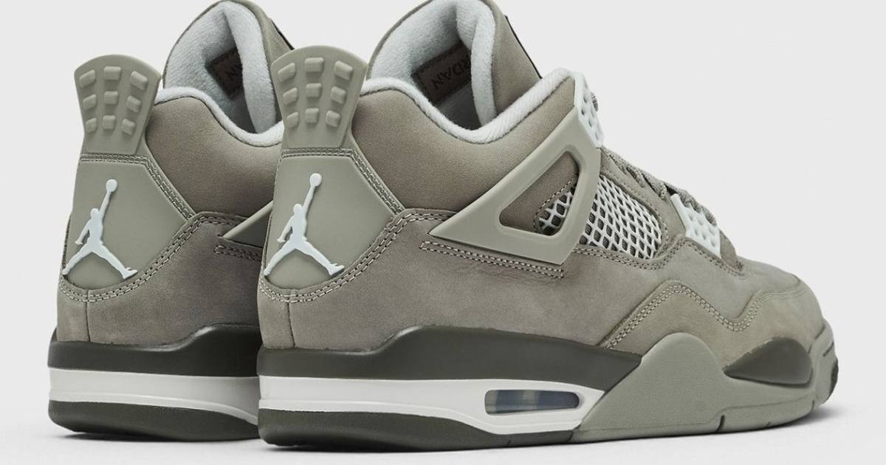

Sunday's Sneaker Drops: Jordan 4 'Light Army,' Kobe 3 Low Protro, AF1 'Iron Man' — Plus the Week Ahead
Today's drop board: the Air Jordan 4 'Light Army' at $220, the Nike Kobe 3 Low Protro at $190, the Air Force 1 'Iron Man' at $125, and the reported Jordan 1 Mid 'Knicks' at $150 — with the Space Jam collection and AJ6 'White Infrared' coming later in the week.

Sunday's sneaker board is a full one, with four notable pairs landing today and two more heavy hitters later in the week. Here's what's dropping, what it costs, and where to get it.
Today — Sunday, November 1
Air Jordan 4 "Light Army" — $220. The headliner. A muted olive-grey suede take on the AJ4, and one of the cleanest colorways of the year for a silhouette that never really leaves the rotation. Available through Nike SNKRS and select Jordan retailers. Resale trackers already had pairs asking around $230 in common sizes before launch — barely over retail, which makes this one of the more wearable pickups of the month rather than a flip play.
Nike Kobe 3 Low Protro — $190. The Kobe line's retro run continues with the 3 Low Protro. One note for shoppers: release calendars disagree on the colorway name, with some listing it as "Orca" and others as "Black." Either way, it's the same $190 Protro dropping today on SNKRS — check the listing images before you buy if the name matters to your collection.
Nike Air Force 1 '07 Premium "Iron Man" — $125. Gym Red, Team Red, Burgundy Crush and Bright Ceramic combine for the red-and-gold look that earned the nickname. Fair warning: the "Iron Man" name isn't official, since this isn't a Marvel collaboration — but the color story does the talking anyway. Available on Nike.com and through select retailers.
Air Jordan 1 Mid "Knicks" — $150 (reported, unconfirmed). Racer Blue and Safety Orange panels over a black nubuck base, with a chenille tongue logo borrowed from the Air Jordan 8. Jordan Brand has not confirmed the date or price, so treat this one as reported rather than locked — but if it lands today, it's on Nike.com.
The week ahead
Thursday, November 5: the Jordan Space Jam collection, including the Air Jordan 1 Mid "Space Jam" ($165) and Air Jordan 1 Low "Lola Bunny" ($130), plus the Nike Air Foamposite Pro college pack (FSU, LSU and Ohio State, $250 each).
Saturday, November 7: the Air Jordan 6 "White Infrared" ($215) — a retro that always moves.
Hats
No new Hat Club drop surfaced for today. The most recent verified Hat Club release remains the Spooky Season 2026 59FIFTY collection from October 24 — seven team hats in spooky-themed colorways with commemorative side patches, plus two Spooky pins. If you're hunting fitteds this weekend, that's where the latest exclusives live.
Release dates and prices can shift, so check the SNKRS app the morning of each drop.
Sources: Carttactic Nov 1–7 calendar, Claqa sneaker releases Oct 26–Nov 1, Sneaker Bar Detroit, JustFreshKicks, Strictly Fitteds